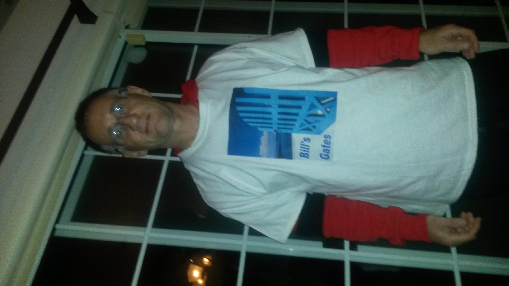
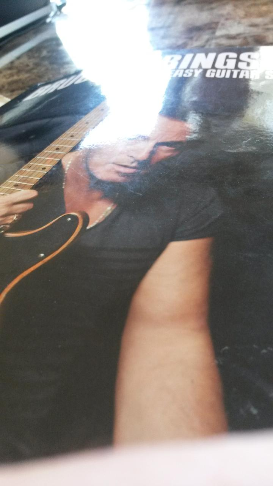

I met Bill's Gates and got the t-shirt
Those who know me probably think that Bill Gates is not exactly on my top ten list of people I would like to meet.
I've been an free and open software enthusiast for longer than I care to remember. Let's just say that over the years Bill hasn't exactly been a friend of open source. To be fair, it pretty much threatened to destroy his rather lucrative business model.
To some extent it has. Bill has moved on, so has Steve "linux is a cancer" Balmer. Microsoft is making more and more code available as open source. I would guess they have realised that if you want to be relevant in today's software world you need your stuff to run on linux, or at least play nicely with that platform.
There is a lot going on in the tech world, it isn't clear how it is all going to pan out. But free and open source is stronger than ever.
Last night, my ace-girl and I wandered down the hill to the local hostelry.
As I blogged a few weeks back, Saturday there is a DJ at this place and it is often a fun night. We were planning to meet another friend who had just got back to the island.
We arrived and things were still quiet. They were showing some highlights from the FA Cup on the TV. I love the FA Cup, always have done. It is when the lower league teams get a chance to show what they can do against higher clubs. Yesterday was a great day for the underdogs. Bradford City, also known as the Bantams (curiously, google in their soccer info used the name Bantams rather than Bradford City. It was odd, because every other club was listed by their more formal name. It was Sheffield United, not the Blades playing a Preston.
There were quite a few people having dinner at the place and 2-3 were celebrating birthdays. DJ Uncle was doing his round of the room, figuring out his audience.
Around this time a guy walked by wearing a t-shirt and a silver tie, all sparkles and glitter, obviously top quality as it was ready-tied and held around his neck by a piece of elastic. I saw the words, "Bill's Gates" on his t-shirt. My curiousity was peaked and we got talking.
It soon became clear it was the guy's birthday. He introduced himself as Bill Gates (or it might have been Bill's Gates). There may have been some alcohol involved, so details are a little blurry. But the gist was he was founder member of "BFBC". The F is along the same lines as the f in swfiua. So it was "Bill's F* Boat Club".
Clearly, this was my chance to be photographed with the man himself:

I can report that Bill was a fine upstanding character and was even kind enough to give me one of his t-shirts:
Now in case you haven't heard Bermuda has been chosen as the venue for the 2017 America's Cup. There is quite a bit of excitement about the island due to this. Maybe BFBC will enter the race :)
Of course, Uncle played Happy Birthday for Bill and the others with birthdays.
I have been on a bit of a Springsteen kick that last week or so, something to do with starting to learn some tunes from my "Bruce Springsteen easy guitar":
Ace girl asked Uncle if he would play some. And in light of the giant killings in the FA Cup and with the hope of more to come from the Red and White Wizards it was appropriate that he should choose Glory Days.
Thanks Bill and everyone who helped make last night a fun time.
Comments
Comments powered by Disqus